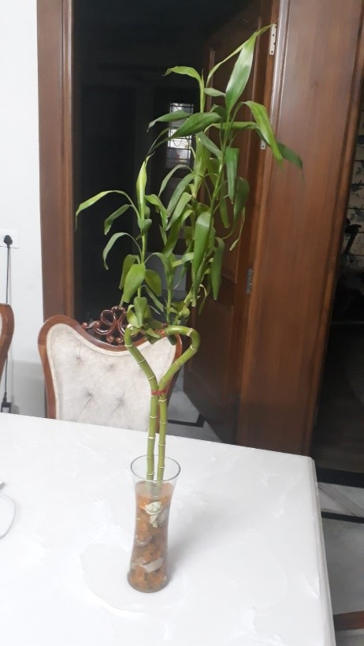
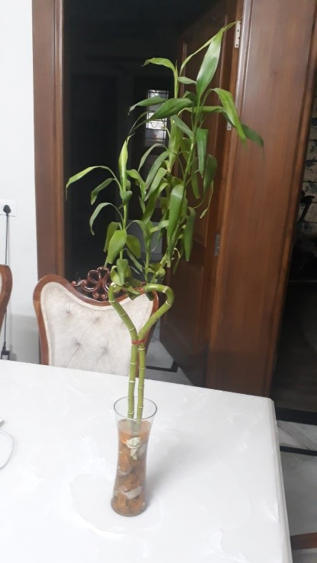

Hydroponics farming produces higher yield of crop and also produces good quality food. The crops grow faster in hydroponics farming.
Plants grown by Hydroponic Farming
Lettuce
Strawberries
Indian Hydroponic farming entrepreneur
Pravin Patel
Pravin Patel, a modern-day agripreneur (agricultural entrepreneur) identified need of more land for agriculture and brought the concept of soil-less farming to the lands of Gujarat and beyond Pravin Patel's ambitions lied in sustainable farming that gave people the privilege of growing their own food and in empowering farmers with 40 times more production through 10 times less water than traditional farming.
Pravin Patel is from Gujrat
Benefits of Hydroponic Farming
Hydroponic farming can grow more plants in the same amount of space as soil-based systems. Therefore, it saves space
Hydroponic farming use about 10 times less water because it's delivered in a controlled way. Also, some systems recirculate water, reducing consumption even more.

 
